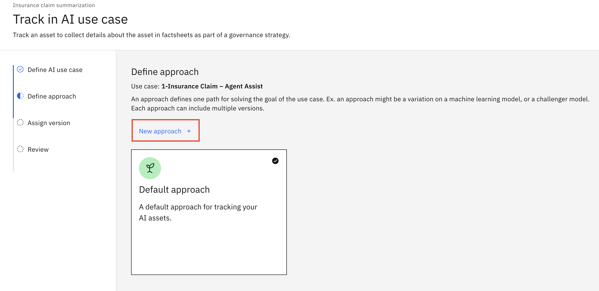

Generative AI Governance
Creating an AI Use Case
First, create an AI Use Case. It will contain all the information regarding the governance of this use case.
-
From the watsonx home page, click the AI governance tile.
-
On the AI use cases screen, click on the Manage settings icon.
-
On the Manage screen, click on Inventories. On the Inventories screen, click on New inventory.
-
On the New Inventory screen, enter a friendly name. Uncheck the Add collaborators after creation option. Then, select the Cloud Object Storage instance that's available in this account, then click Create.
-
Click the x button to close the inventories screen.
-
Now, you should be back to AI use cases page. Click on New AI use case +.
-
Fill in the New AI use case screen as follows:
- Name: 1-Insurance Claim – Agent Assist
- Description: Use an LLM to summarize claim notifications.
- Risk level: Medium
- Inventory: The inventory you just created
- Status: Awaiting development
- Tags: "LLM", "Claims"
Warning
In some IBM Cloud accounts, the administrator might've been created additional required fields. If that's the case, insert any random value for those fields as seen below:
Then click Create
-
You have created the use case, and now you see the Overview page of it. From here, you can update any part of this as needed by clicking on one of the pencil icons.
-
Go to the Lifecycle tab of the AI use case.
As the screen states, there are "No AI assets tracked in this approach" yet, that will change once you create the prompt template for this use case. As the business owner, you will be able to follow their work as the prompt template moves through its lifecycle.
Info
This is the first of the capabilities of watsonx.governance: the ability to create and manage AI use cases across your organization.
Now you will work on a project where you will create a prompt template and then associate it with this use case.
Creating a Project
Info
You're going to create a project by using a sample project for watsonx.governance.
-
From the hamburger menu, select Resource Hub.
-
To quickly find the right sample project, enter Getting started in the search box. Select the Getting started with watsonx.governance project from the search results.
-
Click Create project.
-
Change the name of the project to be created to <YourInitials>-governance and click Create.
-
On the import screen, click on View new project.
Alternative way to create a sample project
You could follow this alternative steps to achieve the same result:
- From the hamburger menu select Projects -> View all projects.
- There, click on New project, then chose Create a project from a sample or file.
- On the Create a project from sample or file page, select the From sample tab, then follow the same instructions.
-
Go to the Manage tab of your newly created project, then to the Services and integrations section in the left-hand pane. Finally, click on Associate service +.
-
From the Associate service screen, select your Watson Machine Learning instance and click Associate.
Creating Deployment Spaces
-
From the hamburger menu select Deployments.
-
Click on New Deployment Space.
-
Define details with the following information for the Development deployment space and click Create:
- Name: <YourInitials>-development
- Description: Development space for Insurance Claim Agent Assist use case.
- Deployment stage: Development
- If needed, associate with storage service and ML service.
-
Create another deployment space to deploy Production models and prompt templates. Use the following details:
- Name: <YourInitials>-production
- Description: Production space for Insurance Claim Agent Assist use case.
- Deployment stage: Production
- If needed, associate with storage service and ML service.
Download the test data
-
Go to the Assets tab in your new project <YourInitials>-governance. Then find the file Insurance claim summarization test data.csv and download it by clicking the three-dot menu.
Info
Feel free to open the file and take a look. This is the file that we'll use to test if our Generative AI prompt template is working properly.
In this case, the prompt will summarize an Insurance Claim. Therefore, the test file contains a list of claims, and the ideal summary that we'd expect from the model.
Create and evaluate an LLM prompt template
-
Go to the Assets tab in your new project <YourInitials>-governance. Then click the prompt Insurance claim summarization by clicking its name.
-
If the following popup opens, check Don't show this message again and click Edit.
-
Click on the View prompt info button to see the details of this prompt. Note that the task is Summarization. It indicates that the prompt will be used for a summarization task. This matters because different tasks are evaluated differently.
-
Let’s focus on the prompt itself in the main screen:
- At the top of the screen, you will see the instruction given to the LLM.
- Also note that there are no further examples given. This is what is called “zero shot prompting”.
- At the top right, you can see that the “flan-ul2-20b” foundation model was used for this prompt. There are several different models that you can choose.
-
Click on the Model parameters button to see the details.
Info
Here you can see more details about the setting for the chosen model, for example that the response from the model can be no longer than 200 tokens (“Max tokens”). In LLM terms, a token is the core building block of generative AI and it is equivalent to a word or part of a word. This tells me how long the summary can be at most.
-
Note that we are using a variable called input that will contain the full claim description that will be sent from our claims application.
You have a default value set for this variable so you can test the prompt. Click on the Prompt variables button and click on the Default value column to see the default value.
Then, click Generate to test the prompt template with the default value for input.
-
The summary of the default value of the input varialbe is shown in the Output section:

Running an evaluation
Info
Evaluating a prompt template manually is a bit cumbersome, as many input values must be tested to check the template is working properly.
watsonx offers a better way to evaluate a prompt by providing a dataset to run a set of tests automatically.
-
Click on the Evaluate button at the top of the screen.
-
On the Evaluate prompt template screen, expand the Generative AI Quality dimension.
Tip
On the first screen of the Evaluation wizard, you can see the LLM-specific metrics that are appropriate for this prompt template. Earlier, you verified that this prompt is meant for a summarization task, these are the metrics for such a task. The tooling automatically selects the right set of the metrics for the task type, as it says at the top of this screen.
Click Next.
-
Here, you need to point it to some sample data to help evaluate this prompt. Click the Browse button and select the test data csv you downloaded from the project during set up.
-
For the input column, select Insurance_Claim. For the output column, select Summary, then click Next.
-
Review the settings and then click Evaluate.
Note
Remember that this test data contains both a claims description, as well as a summary created by experienced claims handlers. This will help you evaluate how well the model performs in comparison.
Reviewing the evaluation results
-
On the evaluation results screen, you will see the results. Again, you don’t have to go through every single one, but few important ones to highlight are:
-
The Model Health section shows some technical performance metrics, including a token count. Since most commercial models are paid for by the number of input/output tokens, this is an important metric to keep track of.
-
The first couple of metrics under the Generative AI Quality header all measure the accuracy of the model. The Violation columns show no warnings, so they are all within acceptable ranges. For example, if the ROUGE-1 threshold is set for 0.8 and the evaluation result for ROGUE-1 is 0.7 then you will see a violation of 0.1.

-
-
Scroll down to the bottom of the screen. Find the metrics related to PII and HAP.
Info
-
PII stands for Personally Identifiable Information, HAP stands for hate, abuse and profanity. You will check for the presence of both in the input and output data. In your example here, they are all 0%, so we’re safe on those dimensions.
-
At the very end, you will see one metric that does not meet the expected criteria: Readability is scored at 52.51, and that is a violation of 7.49 (against a lower threshold of 60). This means the generated summaries are more difficult to read then we’d like them to be.
-
This might be reason for you to work some more on their prompt to see if they can get these results up. Let’s assume for now that you’re OK with this and move on.
-
Documenting the AI use case
There’s one final task for you: associate this prompt template with the use case that the business owner has created, so all of this information can be shared with all stakeholders.
-
Click on the AI Factsheet tab. All the information you just reviewed is recorded in what we call a “factsheet”, think of it as the nutritional label for your AI models. Scroll down and check the information included, you will see:
- The foundation model that was chosen.
- Click on View details to see the model card provided by the model’s creator.
- The task type and actual prompt.
- The prompt parameters.
- And all the evaluation criteria.
- This is all done automatically, the AI engineer did not have to do anything for this, saving them tons of time compared to manual model documentation by copy/pasting all of this into a Word document or so.
-
Scroll back up to the top of the Factsheet. Click Track in AI use case to associate this prompt with the AI use case.
-
Select your 1-Insurance Claim – Agent Assist use case and click Next.
-
This approach is a way to organize models and prompts within a use case. There is no prescribed way to organize it, it can be whatever makes sense for the situation at hand.
In this case, since we are not including any examples in the prompt, we might put this prompt in a zero shot prompting approach. Click on New approach +.

-
In the New approach screen, configure it as follows:
- Title: Insurance Claims Agent Assist Zeroshot prompting
- Optionally, change the icon and color
Click Create.
-
Make sure your new Approach is selected and click Next.
-
On the model version page, accept the default settings by clicking Next.
-
Click on Track asset.
-
OK, your prompt template is now connected to your use case.
Review and approve the candidate prompt template
-
Go back to your AI use case. Go to the Lifecycle tab if not already there.
-
Go to the Lifecycle tab. Now you will see the zero-shot Approach and the prompt template. It is shown in the Develop column as the first step in the lifecycle.
Info
From here, you can also review all the details without having to go over to the technical development side of the solution.
There is a red alert showing next to your prompt template. This is a sign that one or more metrics have violated their threshold. You can find more details about the alert.
Click the tracked prompt.
-
At the top you will see the version and any comments you added when creating this version. Let’s jump directly to the evaluation results to see the issues of this version. Click on Test results, in the left-hand pane under Evaluation -> Develop.
-
At the top of the list, you will see the metrics with the alert. As you’ve seen before, it’s the Readability metrics that’s a little low.
Note
It’s not too bad though and given the typical education level of our claim handlers, you don’t expect this will be a problem in practice. You should keep an eye on it though, so good to have it documented here. You will now mark that this prompt ready is ready for validation testing.
Take your time to review the rest of the Factsheet. Then, click Cancel to close it.
-
Go to the Overview tab of the AI use case. Click on the Pencil icon for the Status field.
-
Change the status to Ready for AI asset validation and click Apply.
Deploy the prompt template for Testing
-
Go back to your project. Note that the prompt is now marked as being tracked in an AI use case.
Click on the three-dots menu of your prompt template, then select Promote to space.
-
Select your Development Deployment Space. Tick the Go to space after promoting the prompt template box, then click Promote.
-
Your prompt template is ready to be deployed in the Development Deployment Space so the prompt template is ready to be consumed. Click New deployment.
-
Insert the following details:
- Name: <YourInitials>_claims_summary_zero_shot_flan
- Serving Name: <YourInitials>_claims_summary0_flan
Then click Create.
-
Your prompt template can now be consumed. Make sure the status is Deployed, then click your deployment name to open it.
-
The API reference tab shows you how to consume the prompt. Note that you just need to provide the Claim Insurance you want summarized in the input parameter, as the full prompt is already built in the template.
Go to tab Test to test it from this interface.
-
Feel free to insert any description of an Insurance Claim in the input box. Then click Generate
-
The result of the prompt template with that input is shown. This is the same output you would get if using the API programatically.
Click the x button to close this screen.
Evaluating the prompt template in Testing
-
Go back to your AI Use Case.
-
Then, go to the Lifecycle tab again. You should now see the deployed prompt in the Validate column with a tag "Pending Evaluation". Your deployment action is automatically reflected in the AI use case, nothing I need to do for that.
-
Click on your deployed prompt.
-
You'll see the information of your Development deployment here. Click Open in space to go back to your deployment.
-
Go to the Evaluations tab then click Evaluate.
Info
In a real-case scenario, the previous evaluation in the project was done by the prompt developer.
Now that the developer has made the prompt template available in a Development/Test deployment space, an AI operator would run the evaluation with real examples to confirm it fulfills the quality requirements.
-
Like before. Click on Next and add your CSV with expected outcomes. Select the right properties, then click Next and Evaluate,
-
Go back to the Lifecycle tab of your AI use case. The evaluation of the published prompt template in the Testing deployment space is shown:
Tip
In a real-case scenario, once the model is validated, it would be promoted to a Production space and monitored there. New tests would be run to evaluate it in Production with updated test data.
If you have time, feel free to promote the prompt template to your Production deployment space, and see how the information of the AI Use Case gets updated accordingly.